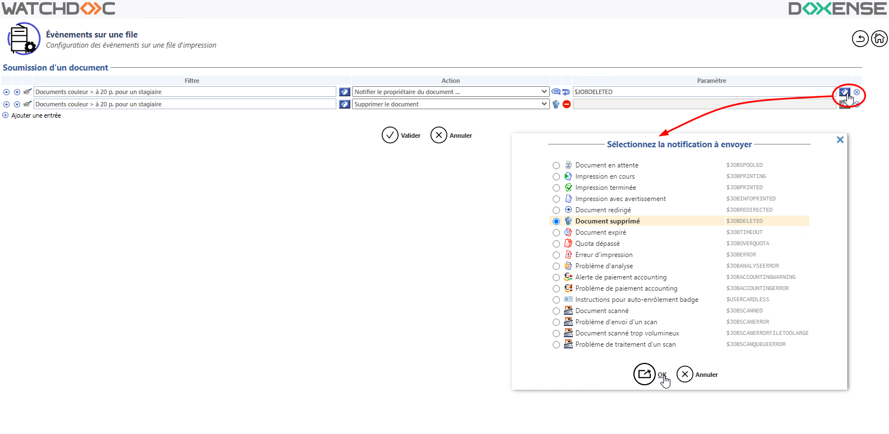
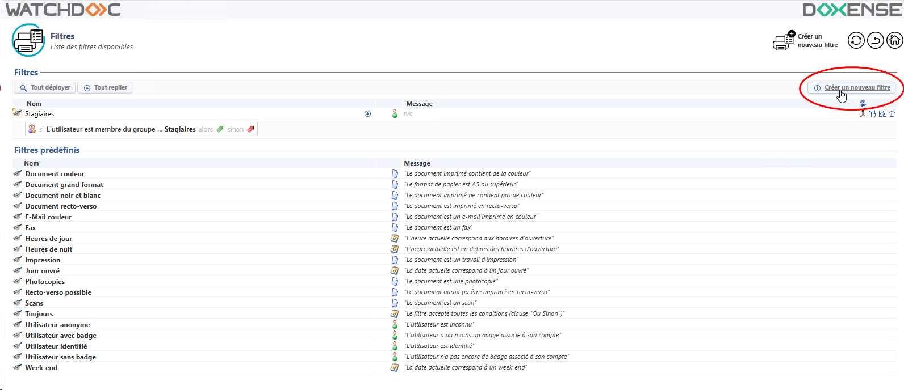
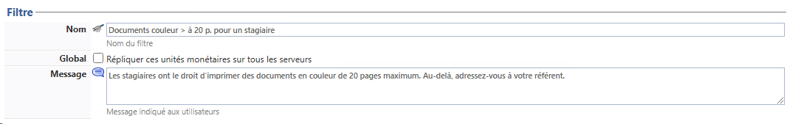
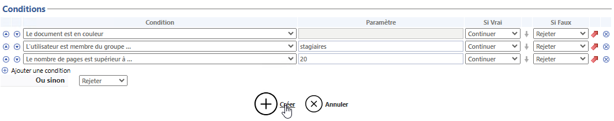

Etapes de configuration
Les étapes de mise en oeuvre d'une politique d'impression sur une file sont les suivantes :
-
déclarer la file d'impression ;
-
appliquer la règle sur la file d'impression ;
-
créer la règle à l'aide
-
d'un (ou plusieurs) filtre(s) ;
-
d'un (ou plusieurs) rôle(s) ;
-
-
valider la file pour appliquer la règle ;
-
tester l'application de la règle sur la file.
Déclarer la file d'impression
-
Depuis le Menu principal, section Configuration, cliquez sur Files d'impression, emplacements, groupes de files & pools.
Vous accédez à la liste des files et groupes de files. -
Dans la liste, cliquez sur la file d'impression (ou le Groupe de files) sur laquelle vous souhaitez appliquer le filtre.
Si la file n'existe pas, créez-la (cf. Créer une file d'impression) et configurez-la (cf. Configurer une file d'impression).
-
Dans l'interface de gestion, cliquez sur le bouton pour accéder à l'interface de gestion des Règles de la file.
-
Dans la liste Événements> Section Soumission d'un document, cliquez sur le bouton
 Editer à droite de la file d'impression ;
Editer à droite de la file d'impression ; -
Dans l'interface des Evénements sur une file, section Soumission d'un document, cliquez sur le bouton
 pour sélectionner un Filtre ou un Rôle dans la liste.
pour sélectionner un Filtre ou un Rôle dans la liste. Si le filtre et/ou le rôle nécessaires à votre politique d'impression n'existent pas, cliquez sur le bouton Créer un nouveau... et créez le filtre et/ou le rôle souhaités (cf. Créer et configurer un filtre, Créer et configurer un rôle).
-
Sélectionnez ensuite l'Action à appliquer lorsque le filtre est vérifié. Ces actions sont prédéfinies et certaines peuvent être complétées par un paramètre.
Veuillez noter que :
-
l'action "Suggérer la conversion" est dépendante de la fonctionnalité "Transformation de spool du WES" associée à la file ;
-
l'action "Notifier le propriétaire du document..." permet d'envoyer par mail le message saisi lors de la configuration du filtre.
-
-
Complétez par un Paramètre si nécessaire :

-
Cliquez sur le bouton
 pour Valider la règle paramétrée sur la file.
pour Valider la règle paramétrée sur la file. -
Vérifiez l'application de la règle sur votre file.
{kind=link}
Créer et configurer un filtre
-
Depuis le Menu principal , section Gestion, cliquez sur Filtres.
Vous accédez à la liste des filtres déclarés et filtres prédéfinis (cf. liste des filtres prédéfinis en annexe) par défaut dans Watchdoc.
-
Dans la liste des filtres, cliquez sur le bouton Créer un nouveau filtre :

Configurer la section Filtre
Dans l'interface Création d'un filtre, section Filtre, saisissez les informations générales concernant le filtre :
-
Nom : attribuez un nom explicite au filtre. Ce nom est celui qui s'affiche dans l'interface d'administration.
-
Message : saisissez un message expliquant les conditions appliquées dans le filtre.
Ce message est destiné aux utilisateurs pour justifier, par mail ou par notification, les préférences d'impression imposées, la redirection ou le rejet de son impression à partir du moment où la règle exploite le filtre et comporte l'action "Notifier...".
Par exemple : "Vous ne disposez pas du droit d'imprimer les mails en couleur" ; "Les impressions en couleur supérieures à 100 pages doivent être confiées au service Reprographie", etc.
Configurer les conditions
Le filtre repose sur une ou plusieurs conditions qui doivent être vérifiées pour que les travaux d'impression puissent être différenciés.
Par exemple : "Le document est en couleur" ; "Le jour de la semaine est..." ; "L'utilisateur est identifié", etc. sont des conditions prédéfinies dans Watchdoc.
-
Condition : sélectionnez dans la liste la condition composant votre règle (cf. Liste des conditions en annexe). Les conditions portent sur :
-
des caractéristiques relatives aux documents : couleur ou monochrome, nombre de pages, impression ou photocopie, format de papier, etc.
-
des caractéristiques relatives aux utilisateurs : répondant à un nom particulier, appartenance à un groupe, à un domaine, à un rôle, etc.
-
des caractéristiques relatives à la date et/ou à l'heure : jour spécifique, horaires d'ouverture, avant ou après une heure précise, etc. (la valeur "Pendant les horaires d'ouverture" correspond aux horaires indiqués dans la Configuration système) ;
-
le poste de travail : possède une IP précise, répond à un nom DNS spécifique, etc ;
-
le type de refacturation : le code de refacturation correspond à un client précis, le coût est supérieur ou inférieur à une certaine somme, etc. ;
-
l'état de la file d'impression : la file contient un tag spécifique, la file appartient à un groupe de files spécifique, etc. ;
-
un autre critère (divers) : le document doit valider ou ne pas valider un filtre déjà prédéfini.
-
-
Paramètre : lorsque le champ de saisie est actif, saisissez la valeur correspondant à la condition qui doit être vérifiée.
Certains paramètres doivent respecter des formats précis, (cf. la syntaxe en annexe.)-
Si vrai : sélectionnez l'action effectuée lorsque la condition est vérifiée :
-
Continuer* : la vérification continue et passe à la condition suivante ;
-
Sélectionner : l'élément analysé est sélectionné puisqu'il répond à la condition ;
-
Rejeter : la vérification s'arrête et l'élément analysé est rejeté puisqu'il ne répond pas à la condition.
-
-
Si faux : sélectionnez l'action effectuée lorsque la condition n'est pas vérifiée :
-
Continuer* : la vérification continue et passe à la condition suivante
-
Sélectionner : l'élément analysé est sélectionné puisqu'il répond pas à la condition
-
Rejeter : l'élément analysé est rejeté puisqu'il ne répond pas à la condition et la vérification s'arrête :

* Si une ligne ne contient aucune action Continuer, la vérification s'arrête et les conditions suivantes ne sont pas évaluées.
Par ailleurs, une ligne ne peut pas contenir une même action dans les colonnes Si-Vrai et Si-Faux.
-
-
Valider le filtre
-
Cliquez sur le bouton
pour Valider la configuration de votre filtre -
Vérifiez l'application de la règle sur votre file, puis ajustez ou corrigez la règle si nécessaire.